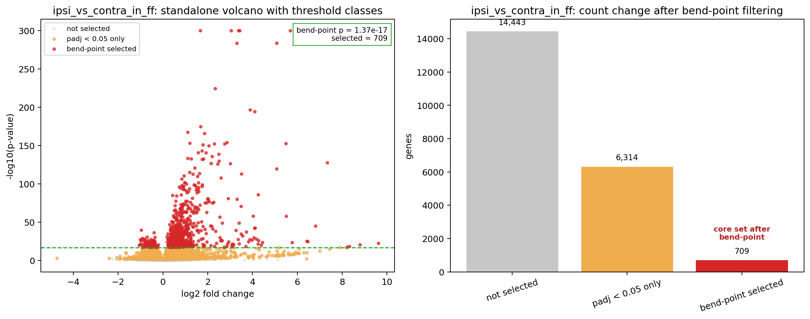
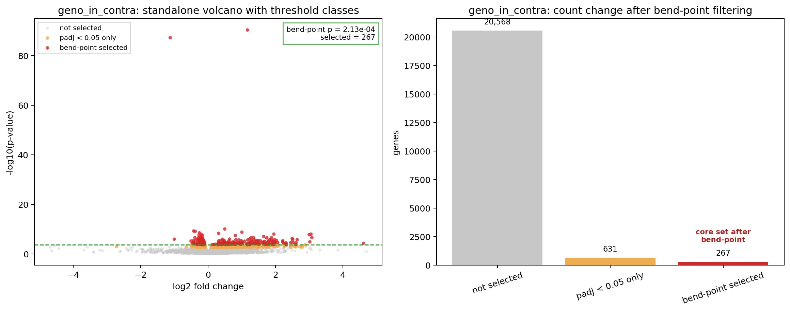
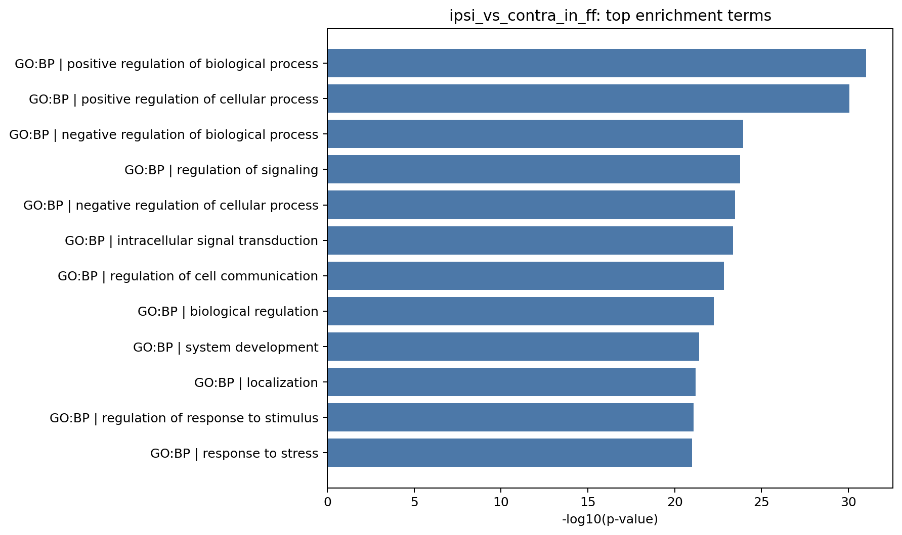

Mouse RNA-Seq — Differential Expression Follow-up (`SRP618841`)
What we accomplished since the previous report
Since the previous differential-expression report, we shifted from simply exporting DE results to interpreting the
mouse_new contingency dataset and deciding which part of the signal is strong enough to guide both the next weekly
report and the first paper draft. Using the current SRP618841 notebook and derived-analysis outputs, we reviewed
the dataset structure, re-plotted the main contrasts, and added transcript-guided follow-up analyses so the results would
be easier to understand instead of remaining a large list of significant genes.
The clearest conclusion from this follow-up is that the main side-specific DRG contrasts remain the strongest and cleanest
signal in the dataset, while geno_in_contra is the strongest secondary branch. In contrast, geno_in_ipsi
and interaction remain exploratory and are not the best lead story for either the report or Draft 1.
Methods used
The current follow-up keeps the same DESeq2 result framework from the canonical mouse_new notebook, but the emphasis
is now interpretive rather than purely procedural. Following class feedback from Apr 1, we treated PCA as the first sanity check,
used the DE plots to compare signal strength across contrasts, and then applied an ordered-p-value / cumulative bend-point
method to narrow very large gene lists into smaller follow-up sets for enrichment and story selection.
- PCA is used first to separate intrinsic sample structure from contrast-specific signal.
- Bend-point filtering is used to define a narrower core follow-up set from the much larger significant-gene pool.
- GO / KEGG / Reactome enrichment is run on bend-point-selected genes for the main side-specific contrasts and
geno_in_contra. - The goal of this follow-up is to understand the data and choose a defensible story, not just to generate more plots.
Transcript-driven follow-up / class feedback
The strongest class feedback this week was that our DE interpretation should begin with what the data structure is telling us,
not with an arbitrary top-gene list. The Apr 1 discussion emphasized three things that now guide this report: first, PCA should
be interpreted before gene-level claims; second, very large DE lists should be narrowed with a reproducible rule rather than a fixed
top-N; and third, enrichment should be used to interpret a principled gene set instead of replacing direct reading of the
main DE signal.
We also took seriously the concern that genotype labels should not be over-interpreted if the PCA structure does not cleanly separate
ff and cre on the leading components. The updated annotated PCA now makes that point much clearer: side class is
the dominant organizing axis, while genotype is present but secondary.
Results
| Contrast | Role | Significant genes (padj ≤ 0.05) |
Bend-point-selected genes | Current reading |
|---|---|---|---|---|
ipsi_vs_contra_in_ff | Main side-specific | 7,023 | 709 | Strongest and cleanest story candidate; large DE signal narrows to an interpretable core set. |
ipsi_vs_contra_in_cre | Main side-specific | 7,541 | 870 | Also strong; confirms that the side-specific DRG pattern is reproducible across genotype contexts. |
geno_in_contra | Secondary genotype | 891 | 267 | Best supporting branch; useful context, but still weaker than the main side-specific contrasts. |
geno_in_ipsi | Exploratory genotype | 2 | 113 | Too weak to lead the story; useful only as contrastive context for now. |
interaction | Exploratory interaction | 14 | 1,823 | Needs caution because the bend-point-selected set is much broader than the strict DE core. |
At the report level, the main biological takeaway is that the dataset supports a strong side-specific DRG differential-expression story. The genotype branch is still present, but the best current evidence places it in a supporting role rather than at the center.

This annotated PCA is the correct first read of the dataset because it shows the baseline structure before any gene-level filtering.
Color now tracks side class and shape tracks genotype, which makes the main pattern much easier to see: the side-specific split is clearer
than the genotype split. Some ff and cre samples are still close together in PCA space, which supports treating
genotype as secondary rather than as the primary organizing signal.


These two panels do different jobs. The standalone view keeps the full DE result visible, while the before/after comparison shows what happens when the bend-point threshold is applied. This matters because the bend-point is not redefining significance; it is narrowing the very large significant-gene set into a smaller core subset that is easier to interpret and defend in the report.


This is the strongest genotype-specific supporting branch. The raw contrast is weaker than the side-specific DRG contrasts, but it is not zero,
and the bend-point comparison shows that the secondary genotype signal remains interpretable after narrowing. That makes geno_in_contra
the best supporting result to retain in the report while keeping the main story centered on side-specific DE.


The original enrichment summary plot is still useful for ranking terms quickly, but the companion overlap plot explains them better by showing how much of the bend-point-selected gene set each term actually covers. Together, these figures suggest broad regulation, signaling, and development/localization themes, but they are being interpreted as support for the DE story rather than as a replacement for direct reading of the contrast itself.
Interpretation and direction
The current DE follow-up points us in a clearer direction than the earlier package-only stage. The strongest story in the data is not “all possible
contrasts are interesting”; it is that the DRG dataset shows a strong side-specific differential-expression pattern, and that this pattern remains the
best anchor for interpretation after applying a principled narrowing method. The genotype branch matters, especially in geno_in_contra, but
it is better used as supporting evidence than as the main claim.
This also clarifies how to read the class feedback. The point was not to add more analysis for its own sake. The point was to make the results easier to explain: start with the structure, show the strongest contrast clearly, explain how the large DE list is narrowed, and then use enrichment to help name the biological themes in that narrowed set.
How this prepares the draft
This report follow-up helps the team move toward Draft 1 in the way described in paper_strategy_story_first.md. The DE interpretation is now
closer to a paper-ready structure: the main claim candidate is the side-specific DRG signal, the strongest evidence is the two main side-specific contrasts,
and the supporting evidence includes QC/alignment confidence, PCA structure, and the secondary geno_in_contra branch. That gives the team a clearer
starting point for Draft 1 than simply carrying forward a large list of DE tables.
Next steps
- Choose which side-specific contrast should be the hero figure for the next weekly report / Draft 1 handoff.
- Keep
geno_in_contraas the main supporting genotype branch and avoid over-centeringgeno_in_ipsiorinteraction. - Use the bend-point-selected gene sets and enrichment companion plots to choose the clearest biological themes for the paper story.
- Carry this structure directly into the Draft 1 writing outline so the report and the paper stay aligned.